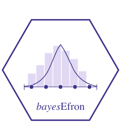

M5 · Stan model, sampler, and cache
Source:vignettes/m5-stan-and-cache.Rmd
m5-stan-and-cache.RmdScope of this vignette
M2 specified the log-spline prior on
,
M3 composed that prior into the four-level random-effects hierarchy, and
M4 fixed the discrete support
and the natural-cubic-spline basis matrix
on which
lives. M5 closes the implementation arc: it walks through the locked
Stan program inst/stan/efron_re.stan block by block,
documents the sampler defaults that bayes_efron_fit()
passes to CmdStan, and specifies the two-tier compile cache. The cache
is not an optimisation curiosity; the cache key, by including the
SHA-256 of the Stan source and the CmdStan and cmdstanr
versions, is the mechanism that prevents stale binaries from silently
changing inferential output across releases.
Notation reminder
The notation is unchanged from M1–M4. is the number of sites; and are the per-site point estimate and within-study standard error; is the latent effect; is the discrete mixing distribution on the support points ; is the natural-cubic-spline basis matrix evaluated at the grid; is the spline dimension; is the spline coefficient vector; and is the smoothness precision.
Reading the Stan source
The package ships a single Stan program,
inst/stan/efron_re.stan, which is byte-locked at release:
its SHA-256 enters the cache key, so any modification invalidates every
compiled binary in every user’s cache directory. The lock is verifiable.
Each Stan block displayed below is read at vignette-build time from the
installed file via the stan_source vector created in the
setup chunk, then sliced with the block_lines() helper that
locates the block opener and the matching top-level closing brace. The
displayed code is therefore byte-identical to the file the sampler
reads. Readers who wish to confirm this can run
digest::digest(file = system.file("stan", "efron_re.stan", package = "bayesEfron"), algo = "sha256")
and compare against fit$metadata$stan_file_sha256 on any
fitted object. The header comment in the source carries authorship,
version, and a one-paragraph plain-English description of the model; it
is preserved verbatim under the lock but is not reproduced here, since
the substantive content appears below.
Data block
The Stan data block declares the seven inputs the sampler consumes
per fit. These are precisely the seven fields stored on
fit$metadata$data_list, and the contract between R and Stan
runs through them: the package’s input-validation layer guarantees that
every field below carries its declared type, bounds, and lengths before
CmdStan is invoked.
data {
// Site-level data
int<lower=1> K; // Number of sites/studies
vector[K] theta_hat; // Observed effect estimates
vector<lower=0>[K] sigma; // Standard errors of estimates
// Discretization grid for prior g
int<lower=1> L; // Number of grid points (typically 101)
vector[L] grid; // Grid points spanning support of θ
// Spline basis specification
int<lower=1> M; // Degrees of freedom for splines (typically 6)
matrix[L, M] B; // Natural cubic spline basis matrix
}The seven fields divide into three groups. The site-level data are
,
the number of sites; the
length-
vector theta_hat of observed effect estimates
;
and the
length-
vector sigma of strictly positive within-study standard
errors
.
The discretisation of the prior is governed by
,
the grid length (default 101), and the
length-
vector grid
,
both specified by the recipes documented in M4. The spline basis is
encoded by
degrees of freedom (default 6) and the
matrix B, where
is the value of the
-th
natural-cubic-spline basis function at
.
The model contains no additional hyperparameters that vary across fits:
the half-Cauchy scale on
and the ridge form of the conditional prior on
are written into the model block as constants. Everything that
distinguishes one fit from another lives in these seven fields. The
metadata payload data_list is therefore a sufficient
statistic for replay: rebuilding it from fit$metadata and
feeding it back through cmdstanr::cmdstan_model()$sample()
reproduces the run up to the sampler seed.
Parameters block
The unknowns over which Hamiltonian Monte Carlo integrates are the -vector of spline coefficients and the scalar smoothness precision.
parameters {
// Spline coefficients for log-density representation
vector[M] alpha; // Coefficients for log g(θ)
// Regularization parameter
real<lower=0> lambda; // Controls smoothness of prior g
}There are exactly sampled parameters: and . At the default the unconstrained parameter space has dimension seven. The latent site effects are absent from this block by design. M3 derived that is integrated out analytically when forming the marginal likelihood of : with discrete on the grid, the convolution has a closed form that the model block evaluates directly. Posterior summaries of that the analyst consumes — the posterior mean , the MAP, the posterior standard deviation, and the posterior replicate — are reconstructed in the generated-quantities block from the sampled , rather than carried as additional latent variables. The practical consequence is that the dimension of the sampler problem grows only with , not with : scaling to hundreds of sites adds no parameters and no warmup cost beyond the per-iteration likelihood evaluation. The non-negativity bound on is enforced through the standard Stan log-Jacobian transform; no manual reparameterisation is performed.
Transformed parameters block
The transformed-parameters block carries the deterministic map that M2 defined, computed once per sampler iteration and made available to both the model and the generated-quantities blocks.
transformed parameters {
// Log-spline representation of prior
vector[L] log_w = B * alpha; // Log unnormalized density at grid points
// Normalized prior distribution
vector[L] log_g = log_softmax(log_w); // Log normalized density (sums to 1)
simplex[L] g = softmax(log_w); // Normalized density on simplex
}The three quantities computed here are the
length-
vector log_w
of unnormalised log-densities at the grid points, the
length-
vector log_g
of normalised log-densities, and the simplex-typed
length-
vector g
.
The Stan function log_softmax(x) returns
,
computed via the log-sum-exp identity that subtracts
before exponentiation, so the normalisation is numerically stable even
when
contains large positive or large negative entries. The model block
consumes log_g (log space, for the per-site log-marginal
likelihood), and the generated-quantities block consumes both
log_g (for the per-site posterior at each grid point) and
g (for the moments
,
,
).
Computing the simplex once per iteration and reusing it across both
downstream blocks avoids redundant softmax calls and concentrates the
sole linear-algebra cost — the
matrix-vector product
— in a single line.
Model block
The model block specifies the joint up to a normalising constant. It contains two prior statements and one likelihood loop.
model {
// ============================================================================
// PRIORS
// ============================================================================
// Hyperprior on regularization parameter
// Half-Cauchy(0, 5) is weakly informative, allowing adaptation to data
lambda ~ cauchy(0, 5);
// Conditional prior on spline coefficients
// Ridge penalty with variance 1/lambda encourages smoothness
alpha ~ normal(0, inv_sqrt(lambda));
// ============================================================================
// LIKELIHOOD
// ============================================================================
// Mixture likelihood for observed effects
// Each θ_hat_i comes from mixture: Σ_j g_j × Normal(grid_j, sigma_i)
for (i in 1:K) {
vector[L] log_components;
// Compute log-likelihood for each mixture component
for (j in 1:L) {
log_components[j] = log_g[j] // Prior weight for component j
+ normal_lpdf(theta_hat[i] | grid[j], sigma[i]);
}
// Add log marginal likelihood using log-sum-exp for numerical stability
target += log_sum_exp(log_components);
}
}The hyperprior on the smoothness precision is half-Cauchy with
location zero and scale five,
,
weakly informative in the sense of Gelman (2006, Bayesian
Analysis): heavy tails permit the data to dominate when the spline
coefficients support large magnitudes, while the truncation to
excludes the ill-posed limit. Conditional on
,
the prior on the spline coefficients is independent Gaussian with mean
zero and standard deviation
,
written in the Stan source as
alpha ~ normal(0, inv_sqrt(lambda)). The implied marginal
prior on
after integrating out
has heavier tails than a fixed-precision Gaussian; this is the mechanism
by which the model adapts the effective smoothness of
to the data without an analyst-chosen ridge constant.
The likelihood loop over
implements the discrete mixture marginal of M3:
where
is the Gaussian density. The loop builds a
length-
vector of log-components
and reduces it with log_sum_exp, which evaluates
as
with
.
The shift guarantees that the largest exponentiated term is exactly one,
so underflow is impossible for the dominant component and the
catastrophic cancellation that a naive
would suffer at small
is avoided. The contribution to target is the log marginal
; the cumulative
target after the loop is the log of the joint up to the
normalising constant of
already absorbed by log_softmax. No manual Jacobian
adjustment is required: the only constrained parameter is
,
and Stan applies the half-real Jacobian automatically.
Generated quantities block
The generated-quantities block computes nine summaries per posterior
draw. The release-blocking Tier 0 verification target
tier0_gq_count asserts exactly that count.
generated quantities {
// ============================================================================
// PRIOR DISTRIBUTION SUMMARIES
// ============================================================================
// Moments of estimated prior g(θ)
real mean_g = dot_product(g, grid); // E[θ]
real var_g = dot_product(g, square(grid - mean_g)); // Var[θ]
real sd_g = sqrt(var_g); // SD[θ]
// ============================================================================
// POSTERIOR SUMMARIES FOR SITE-SPECIFIC EFFECTS
// ============================================================================
// Three types of posterior summaries for each site
vector[K] theta_map; // Maximum a posteriori (MAP) estimates
vector[K] theta_mean; // Posterior means (optimal under squared error loss)
vector[K] theta_rep; // Posterior draws (for credible intervals)
// Additional posterior uncertainty measures
vector[K] theta_sd; // Posterior standard deviations
for (i in 1:K) {
// ------------------------------------------------------------------------
// Compute posterior distribution for site i
// ------------------------------------------------------------------------
vector[L] log_post; // Log posterior at each grid point
// Bayes' rule: posterior ∝ prior × likelihood
for (j in 1:L) {
log_post[j] = log_g[j] // Log prior
+ normal_lpdf(theta_hat[i] | grid[j], sigma[i]); // Log likelihood
}
// ------------------------------------------------------------------------
// MAP estimate (posterior mode)
// ------------------------------------------------------------------------
int max_idx = 1;
for (j in 2:L) {
if (log_post[j] > log_post[max_idx]) {
max_idx = j;
}
}
theta_map[i] = grid[max_idx];
// ------------------------------------------------------------------------
// Normalize posterior to get weights
// ------------------------------------------------------------------------
// Use log-sum-exp trick for numerical stability
real log_post_max = max(log_post);
vector[L] w = exp(log_post - log_post_max);
w = w / sum(w); // Now w contains posterior probabilities
// ------------------------------------------------------------------------
// Posterior mean
// ------------------------------------------------------------------------
theta_mean[i] = dot_product(w, grid);
// ------------------------------------------------------------------------
// Posterior standard deviation
// ------------------------------------------------------------------------
real second_moment = dot_product(w, square(grid));
theta_sd[i] = sqrt(second_moment - square(theta_mean[i]));
// ------------------------------------------------------------------------
// Posterior draw (for uncertainty quantification)
// ------------------------------------------------------------------------
// Sample from discrete posterior distribution
theta_rep[i] = grid[categorical_rng(w)];
}
// ============================================================================
// MODEL DIAGNOSTICS AND CHECKS
// ============================================================================
// Effective number of parameters (for model comparison)
real effective_params;
{
vector[K] posterior_vars;
for (i in 1:K) {
// Compute posterior variance for each site
vector[L] log_post;
for (j in 1:L) {
log_post[j] = log_g[j] + normal_lpdf(theta_hat[i] | grid[j], sigma[i]);
}
real log_post_max = max(log_post);
vector[L] w = exp(log_post - log_post_max);
w = w / sum(w);
real post_mean = dot_product(w, grid);
real post_second_moment = dot_product(w, square(grid));
posterior_vars[i] = post_second_moment - square(post_mean);
}
// Effective parameters = K - sum of shrinkage factors
effective_params = K - sum(posterior_vars ./ square(sigma));
}
// Log marginal likelihood (for model comparison)
real log_marginal_likelihood = 0;
for (i in 1:K) {
vector[L] log_components;
for (j in 1:L) {
log_components[j] = log_g[j] + normal_lpdf(theta_hat[i] | grid[j], sigma[i]);
}
log_marginal_likelihood += log_sum_exp(log_components);
}
}The nine generated quantities partition into three groups. The first
group records the moments of the estimated mixing distribution
:
mean_g
,
the posterior mean of
viewed as a distribution; var_g
, the two-pass
variance; and sd_g
. Per-draw
summaries of these three quantities populate the metadata fields
mean_g_summary, var_g_summary, and the
sd_g_summary attribute carried on
fit$metadata. The second group computes per-site posterior
summaries. For each site
the log posterior on the grid
is formed from log_g plus the per-grid-point Gaussian
log-likelihood, normalised via the max-shift log_sum_exp
discipline. theta_map selects the grid index that maximises
this log posterior; theta_mean is the posterior mean
with
the normalised posterior weights; theta_sd is the two-pass
posterior standard deviation; and theta_rep is a draw from
the discrete posterior via categorical_rng(w), the per-draw
replicate used for posterior predictive intervals (the
theta_summary and theta_rep_draws metadata
fields). The third group computes model diagnostics:
effective_params
, an
effective-parameter count analogous to a hierarchical
penalty, and log_marginal_likelihood
,
the log of the data marginal under the discrete mixture. These feed the
effective_params_summary and
log_marginal_likelihood_summary metadata fields.
Sampler defaults
bayes_efron_fit() invokes
cmdstanr::CmdStanModel$sample() with defaults chosen for
reproducibility rather than tightest performance. The chain count
defaults to chains = 4L, warmup to
iter_warmup = 1000L, post-warmup sampling to
iter_sampling = 3000L, and the NUTS target acceptance to
adapt_delta = 0.9. The fixed warmup is long enough to let
the sampler adapt the dual-averaging step size and the mass matrix
without budget pressure; the post-warmup count delivers
retained draws at the default chain count, which keeps per-site
posterior tail quantiles stable for the verification regimes covered in
M6. The CmdStan initialisation is fixed at init = 0.5 and
is intentionally not exposed as a user-facing tuning argument in v0.1;
the convention narrows the space of release-blocking surprises that user
inits can introduce. The parallel-chain count defaults to
chains but can be overridden by the environment variable
BAYESEFRON_PARALLEL_CHAINS (or the unprefixed
PARALLEL_CHAINS); the override is validated against
chains and rejected if it exceeds it, so a fit that
requests four chains never silently runs fewer. Seeds are auto-generated
when seed = NULL and recorded on
fit$metadata$seed, supporting later replay.
The two-tier cache
Stan compilation is the dominant fixed cost of a fit, and the binary
produced by cmdstanr is identical across runs that share
the same source, compiler, options, and CmdStan/cmdstanr
versions. The package exploits both facts through two cache layers.
The in-session cache is an environment object attached
to the package namespace, keyed by the SHA-256 cache key documented
below. Once a model has been compiled (or restored from disk) within an
R session, subsequent fits in the same session look up the
cmdstanr::CmdStanModel handle in
time; no file I/O, no compiler invocation, and no inter-process locking
is performed. The session cache is cleared automatically when the R
session ends and can be cleared explicitly via
bayes_efron_clear_cache("session").
The on-disk cache lives under a per-user cache root resolved from the
BAYESEFRON_CACHE_ROOT environment variable, with
tools::R_user_dir("bayesEfron", which = "cache") as the
fallback. The root holds a single format-version subdirectory (currently
v1) and within it the compiled binary, a copy of the Stan
source, and a JSON sidecar carrying the cache provenance:
<BAYESEFRON_CACHE_ROOT>/
v1/
.lock # cross-process lock file
<key> # compiled CmdStan executable
<key>.stan # copy of the Stan source used at compile time
<key>.meta.json # JSON sidecar with provenance fieldsThe 64-character hexadecimal <key> is the SHA-256
of the canonicalised JSON serialisation of the cache-key payload. The
payload has eleven fields: the SHA-256 of the Stan source file, the
CmdStan version, the cmdstanr version, the R architecture
string, the CXX compiler identifier, the cache format
version, the model family ("RE" in v0.1), SHA-256 hashes of
the normalised cpp_options and stanc_options
lists, a SHA-256 of the normalised ~/.R/Makevars snapshot,
and the platform-and-OS-major identifier formed by concatenating
R.version$platform with the platform’s major-release token.
The eleven-field composition is designed so that any change capable of
producing a numerically distinct binary changes the key. The on-disk
lookup is guarded by a cross-process advisory lock at
.lock: the lock is acquired before any directory write,
held until the write completes, and released by on.exit
even when the writer is interrupted. Stale locks left behind by killed
processes are detected by reading the PID, hostname, and process start
time the lock file records, and are cleared once the recorded process is
no longer alive.
Cache lifecycle and maintenance
Both cache layers populate lazily. The first
bayes_efron_fit() (or explicit
bayes_efron_compile()) call in a fresh environment computes
the cache key, finds no on-disk entry, acquires the lock, compiles via
cmdstanr::cmdstan_model(), writes the binary and sidecar
atomically through a staging directory, releases the lock, and finally
installs the handle in the session cache. The second call in the same R
session returns the session-cached handle without touching the disk. A
first call in a new R session that finds a matching on-disk entry
validates the sidecar against the recomputed key, restores the binary,
and installs the handle in the session cache; compilation is skipped.
Cache eviction is manual: bayes_efron_clear_cache() accepts
four scopes. "lock_only" removes only the lock file (used
to recover from a crashed compilation that left a stale lock).
"session" clears the in-session environment without
touching disk. "compiled_models" removes the executables,
sidecars, and source copies under the format-version subdirectory but
preserves the cache root itself. "all" clears the
in-session environment and removes the entire cache root after verifying
that the path is a directory the current process owns. The four scopes
correspond to four common operational needs and are documented in detail
in the function’s reference page.
Reading map
This vignette specified the Stan implementation block by block, documented the sampler defaults, and laid out the two-tier compile cache that supports reproducible inference at release. The final methodological vignette closes the loop from specification to verified calibration.
-
M6 — Verification and calibration. The four-tier
verification ladder (Tier 0 structural invariants such as the nine-field
generated-quantities count documented above; Tier 1 internal consistency
against an
optim-based reference fortheta_map; Tier 2 deferred cross-implementation comparisons againstdeconvolveR; Tier 3 the release-blocking aggregate coverage result on the Lee–Sui benchmark fixtures, with acceptance band at nominal ). The cache-key composition documented here is what licenses Tier 3 reproducibility: a binary that produced the gating coverage result can be re-identified, on a fresh machine, from the eleven payload fields alone.
A reader who has followed M1–M5 holds the full specification from hierarchy to compiled binary. M6 supplies the verification surface that v0.1.0 release rests on.